Case study
Verborgen Verhalen
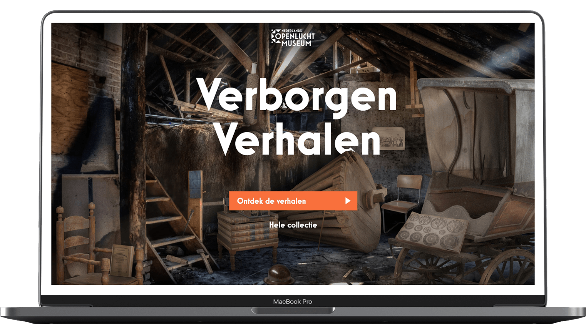
About the project
A different view
The Holland Open Air Museum Arnhem has an extensive digital collection of objects. The website to show these objects however was not very user friendly or appealing to use. Giving it tons of room for creative, interactive solutions.
Live prototypeThe Challenges
Too much content
This project started right after my internship at Driebit as my final graduation assignment. Driebit was already working on the corporate site and was hoping to do the online collection next. This situation became a huge opportunity for me to start creating an entire new experience.
The key challenges of this project where the missed wishes of the users in the past design. User wanted to browse through the collection even without having a clear goal. They also wanted to be able to experience a smaller selection in a more interactive way.
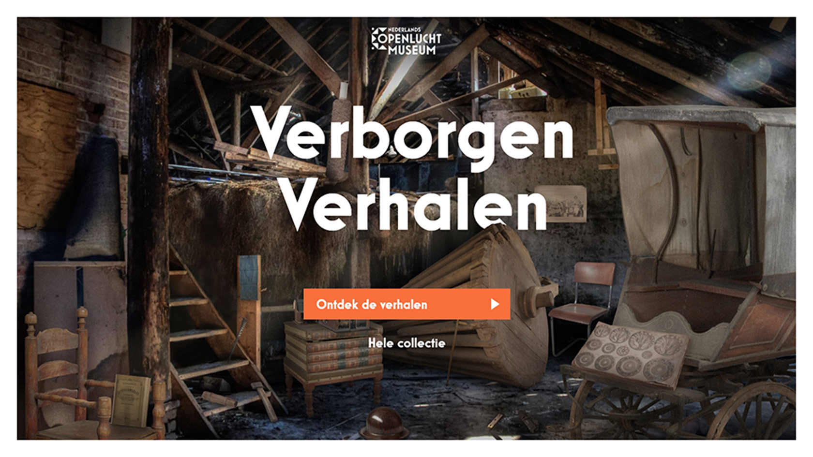
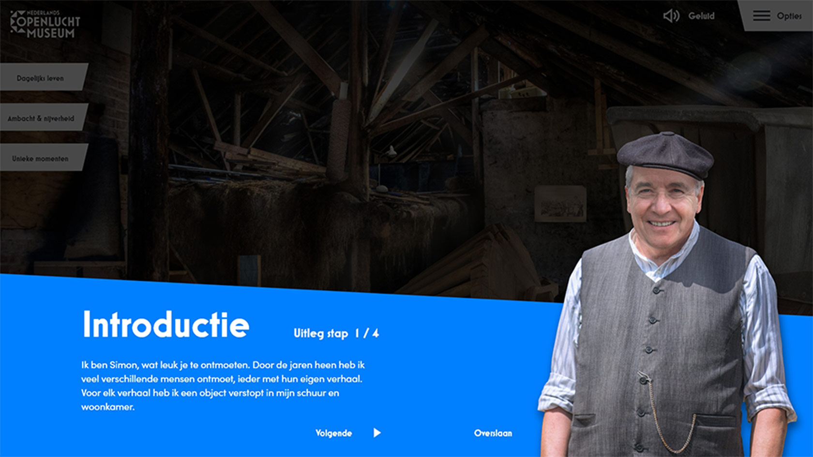
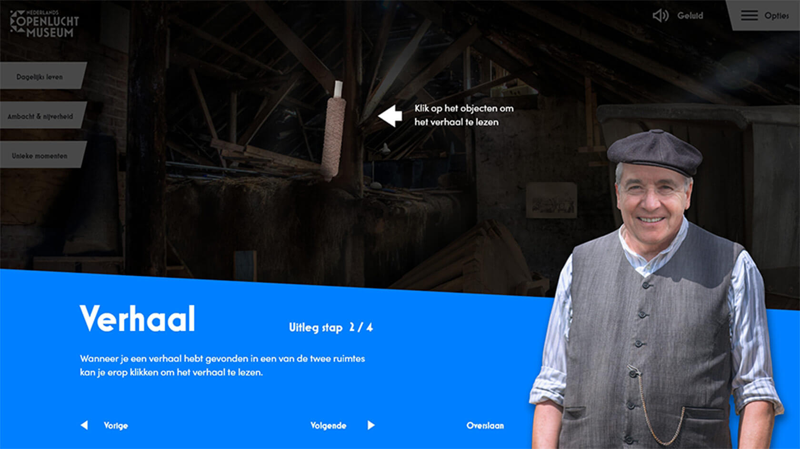
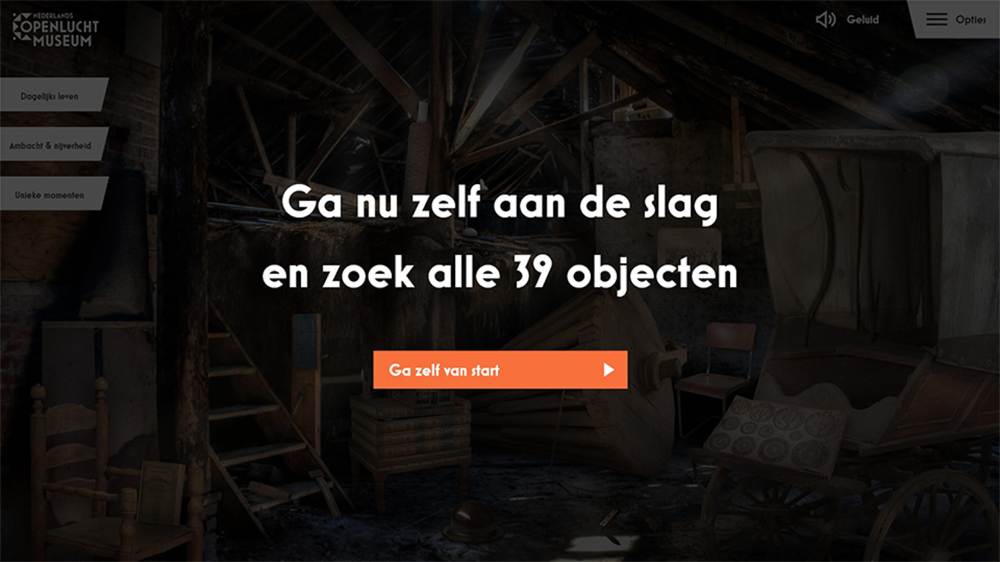
The process
Hidden objects
First I had to think about what I actually wanted to create. After many ideas a I settled on a concept similar to hidden object games. Where the user needs to find objects in a room. This way I could tell the beautiful stories of the object in a fun way.
So I opened photoshop and got to work. I cut out every object and placed it in one of two rooms where that object would logically fit. Besides that I created a story for the user where it would be fitting to find object in a room to read the story of that object.
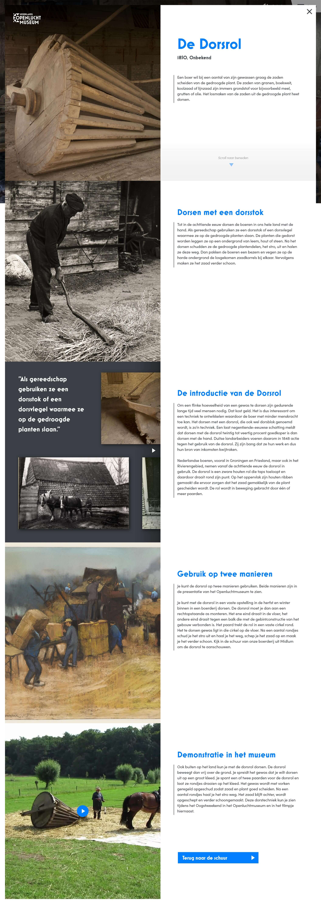
The results
Introduction through games
The result is a stand-alone website specifically tailored to introduce the visitors of the corporate website to the concept of a complete online collection. To do this I created a fun experience without the overwhelming amount of all the 153.000 objects.
The user will first be introduced by the character farmer Simon, who sets the scene. After that the user enters a room where they can click on different objects. The user will then go to a in-depth story of the object itself with interactive elements to keep the users attention.
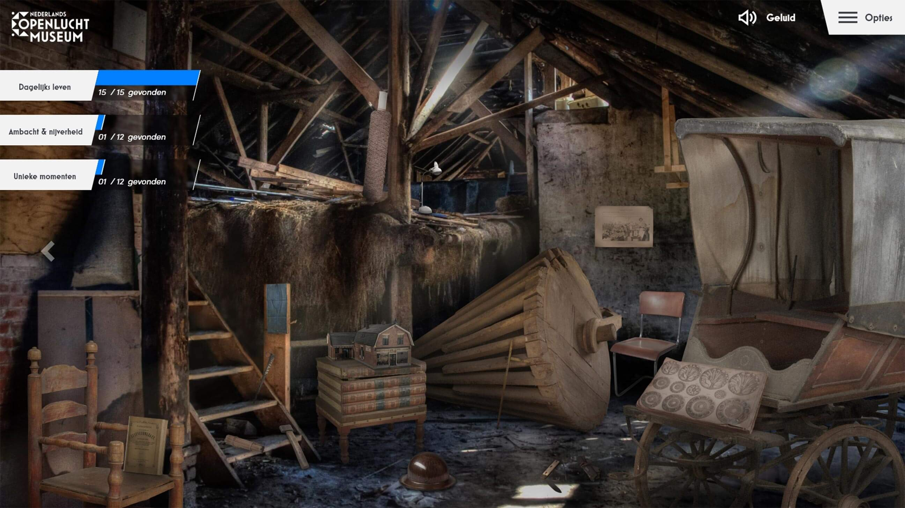
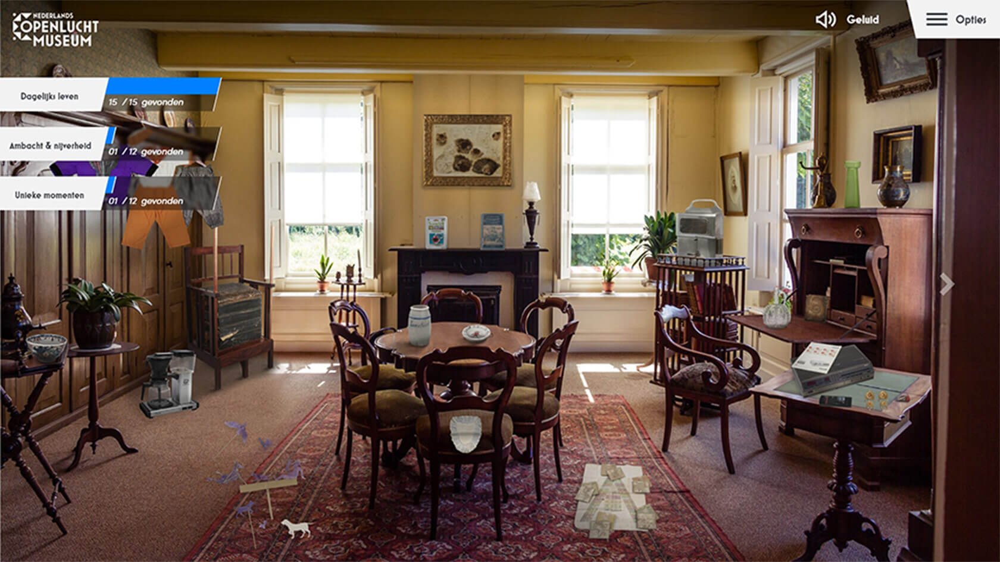
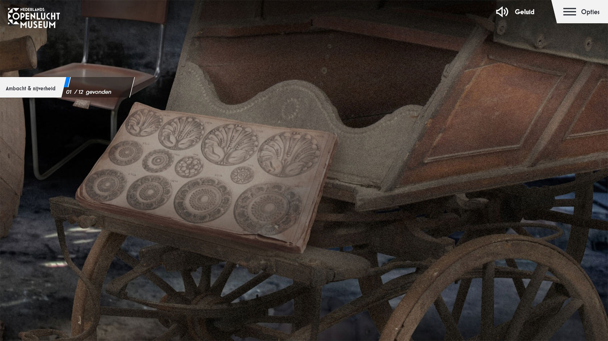
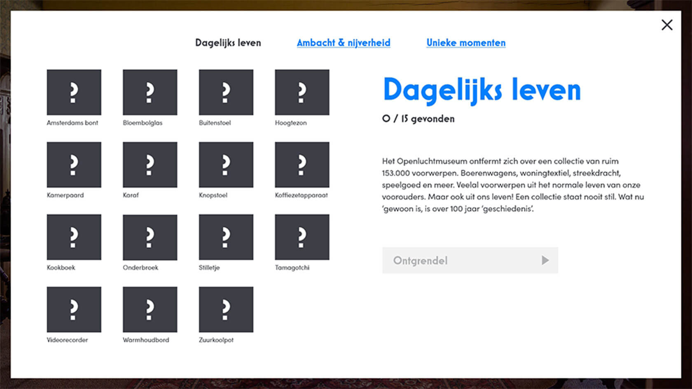
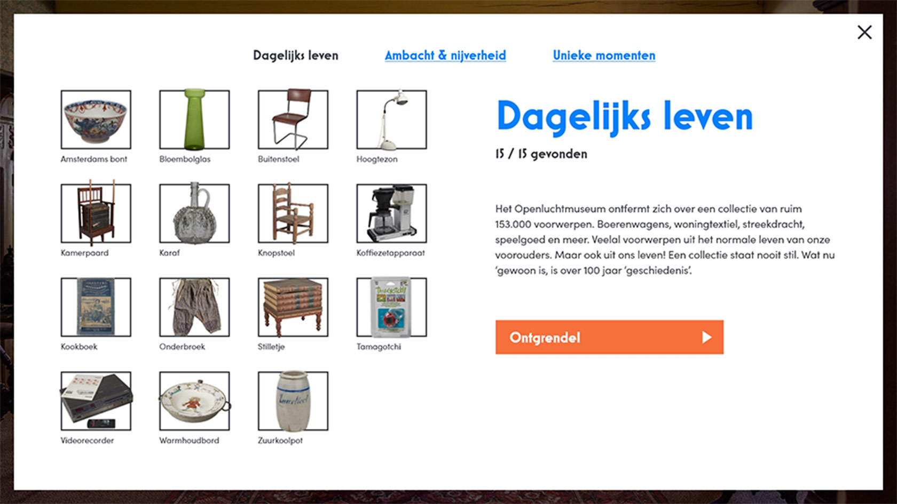
By keeping track of which objects the user has found, three categories can be made. When all the objects within a category get found the user will be rewarded with an extra story which leads naturally to the rest of the collection, and thus always offering the user a next step.
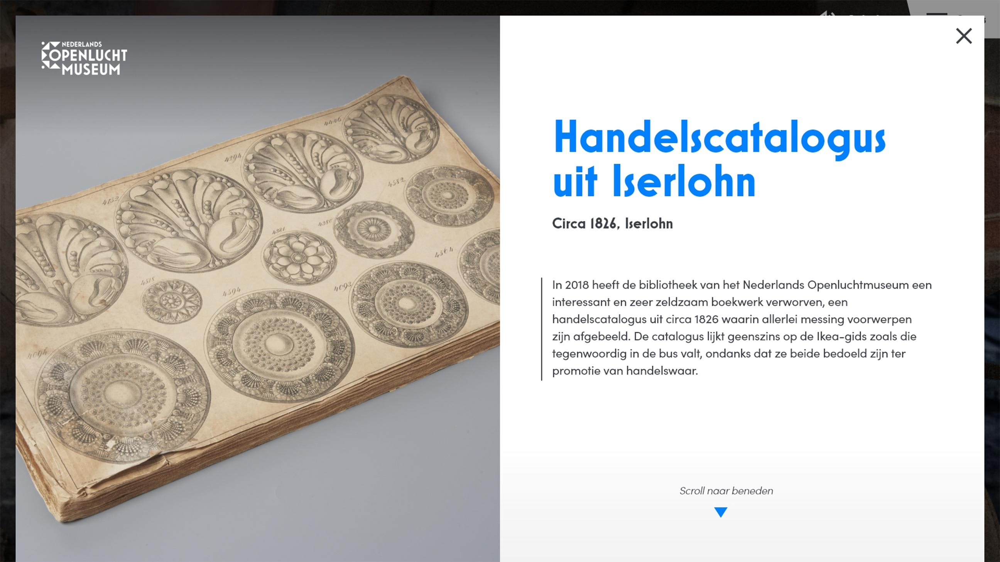
Bekijk ook
Meer projecten
Where's my money?
Next project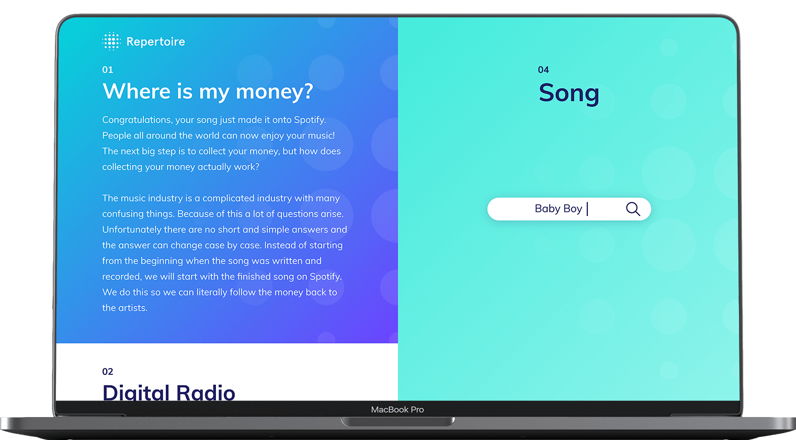